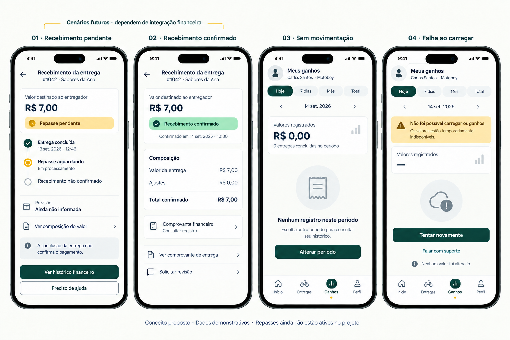
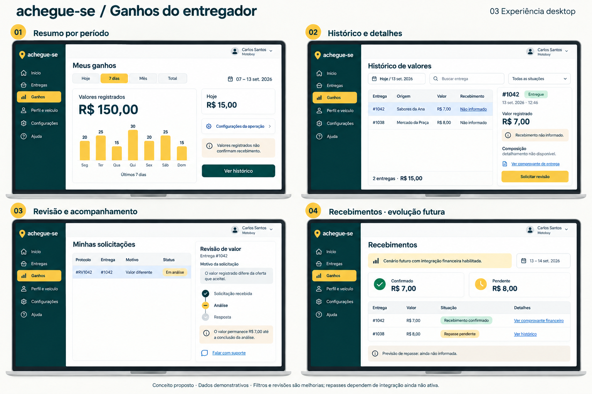

← CatálogoGanhos do entregador
Resumo, histórico, detalhes, revisão e estados financeiros futuros. Não confundir valor de entrega com saldo disponível ou recebimento liquidado.
Documento da página · Registro da revisão
041-ganhos-mobile-inicial · Histórico — não aplicar automaticamente 042-ganhos-mobile · Referência para revisão043-recebimentos-inicial · Histórico — não aplicar automaticamente
042-ganhos-mobile · Referência para revisão043-recebimentos-inicial · Histórico — não aplicar automaticamente
044-recebimentos-estados · Referência para revisão
045-ganhos-desktop · Referência para revisão